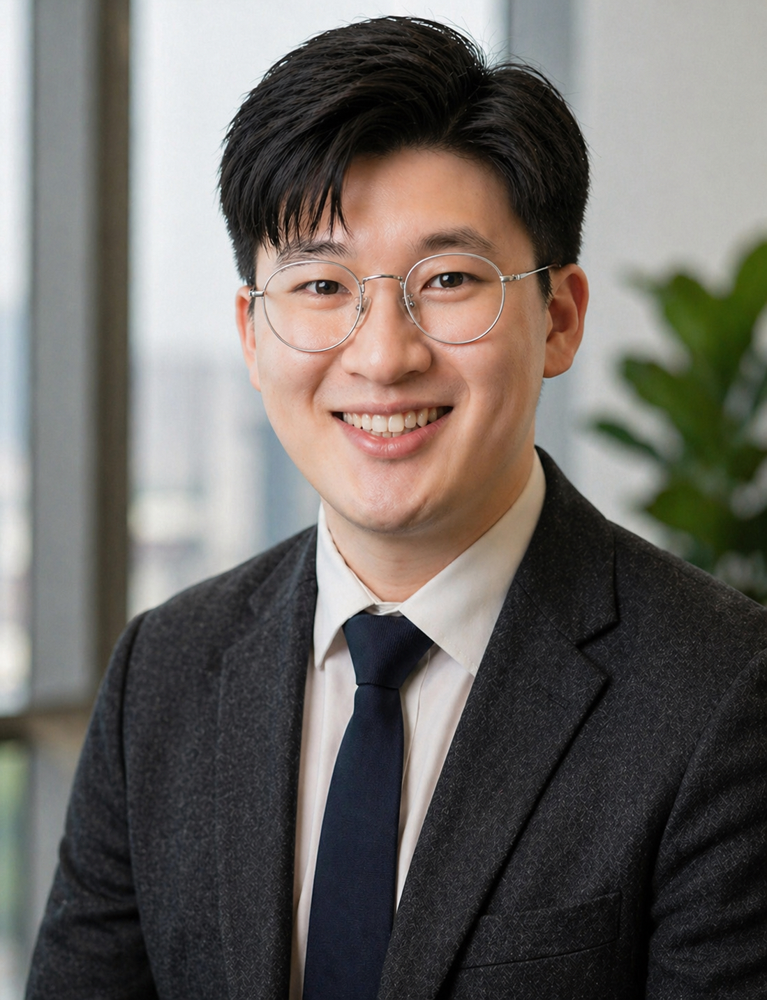

School of Social Sciences, University of New South Wales (UNSW) Sydney
Welcome to my academic homepage：) I'm always eager to learn and exchange ideas with colleagues, researchers, industry practitioners around the world🌍.
I'm a Ph.D. Candidate at the School of Social Sciences, UNSW Sydney, supervised by Prof. Fengshi Wu and Prof. Elizabeth Thurbon. My current doctoral research examines China’s economic engagement in Southeast Asia, particularly its role in the region’s energy transition within geopolitical/economic dynamics. My work lies at the intersection of political economy, international relations, development studies, and area studies, and is supported by the University International Postgraduate Award and the American Marketing Association Marketing and Society Special Interest Group (MASSIG) Doctoral Award.
Prior to this, I served as a consultant at the UNESCO Regional Office in Bangkok, supporting the Literacy and Lifelong Learning Team in implementing regional cooperative programs on equitable education in Southeast Asia. I'm also a country informant for the Asia-Europe Science & Technology Diplomacy Initiative of the Asia-Europe Foundation (ASEF), Singapore. In addition, I used to work as an industrial research project mentor, guiding undergraduate student‘s projects in partnership with companies, and have gained some short-term experience in a government agency’s investment promotion and cooperation department, as well as in the private sector.
I hold an MA in International Development Studies, an MBA in Asia-Pacific Business, and a BBA in Business (with a focus on Southeast Asia). As a lifelong learner, I'm curious about different disciplines, and I have undertaken training in research methods and applied topics, including Hamad Bin Khalifa University’s College of Public Policy (Crisis Management), Concordia University (Applied Diplomacy), Higher School of Economics (HSE)(Statistics and Reporting in R), Keio University (Japanese Studies), UC Davis (Global Learner), Tsinghua University (International Relations Research Methods & Entrepreneurship), Peking University HSBC Business School (Rural Revitalization).
My work has appeared as analytical pieces, commentaries, and articles in academic journals, research institutions, and media outlets, including the Asia Research Institute at the National University of Singapore, the Saw Swee Hock Southeast Asia Centre at the London School of Economics and Political Science, the Australian Institute of International Affairs (AIIA)'s Australian Outlook, NTU's S. Rajaratnam School of International Studies (RSIS) Commentary, Kyoto University's Kyoto Review of Southeast Asia, The Diplomat, East Asia Forum, Lianhe Zaobao, and the Bangkok Post. I have also presented my work at international conferences.